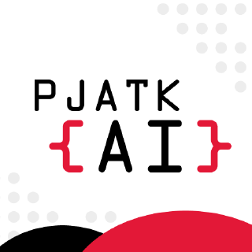

Technikum - TEB Edukacja, Gdynia
Graduated as an IT specialist with a focus on Microsoft cloud technologies.
Computer Science student at PJATK
I'm interested in technology and like learning by doing. I build my own projects, try new tools and look for ways to make my work easier.
I study Computer Science at PJATK while working. I'm looking for my first role in IT where I can use what I already know and learn from more experienced colleagues.
I study, work and build my own projects. Each teaches me something different.
I like knowing how things work. My own projects let me try different approaches and learn from mistakes. I do a lot independently, but I also enjoy discussing solutions and learning from other people's experience.
Alongside my studies, I organise team tasks and enter data at work. This has taught me to pay attention to details, set priorities and work with people. Those skills also help me with my projects.
I'd like to start working in IT and keep developing my skills as part of a team. In my spare time, I run Minecraft servers and put together custom modpacks. That gives me another way to experiment and solve problems.
Computer Science studies, technical education and experience coordinating a team's work.
Graduated as an IT specialist with a focus on Microsoft cloud technologies.
Since 2024, I have had supervisory duties: assigning tasks, entering data into the system and organising the team's work.
Studying Computer Science at the Polish-Japanese Academy of Information Technology: a full-time engineering degree with a specialisation in Cybersecurity, currently in semester 5 of 7.
I'm a member of PJATK{AI}, the AI student research club at PJATK.
Cisco Networking Academy · PJATK ·
Certificate of course completion
Besides my own projects, I work with the AI student research club at PJATK.

A sign language learning app we're building in the club for ScienceCom 2026. It's at an early stage; see the repository for its current state.
What I've learned through projects, university and work.
Java is where I have the most project experience. I build APIs and application logic, connect them to databases and handle login and user permissions.
I build responsive pages and interfaces connected to APIs using JavaScript and React. I know PHP basics: form handling, user sessions and storing data in CSV files.
I design tables and relationships and work with SQL and transactions. I connect applications to external APIs, process JSON and keep configuration separate from code.
I work with Linux, Docker and project build tools. I configure application environments and servers, analyse logs and troubleshoot issues when running applications.
I write tests for application logic, endpoints and database operations. In HourForge, integration tests run against a real PostgreSQL in Testcontainers, and the frontend has component and end-to-end tests. In Helpdesk, I test login, permissions and the complete ticket workflow.
Through CCNA: Introduction to Networks, I learned TCP/IP fundamentals, IPv4/IPv6 addressing and subnetting. I can configure basic router and switch settings and troubleshoot connectivity in a small network.
I understand algorithms and data structures and client-server architecture. At university, I learned the fundamentals of microservice architecture and the basics of C#, C++ and assembly.
I can independently find and analyse information, break a problem into smaller parts and propose a solution. I turn to documentation and learn the tools a task calls for.
I have experience organising a team's work and assigning tasks. I value clear communication and responsibility. I enjoy varied tasks and working on several projects at a time, keeping priorities clear and my work organised.
I use Claude, Codex and other AI tools to improve my development workflow. They help me analyze problems, write and refactor code, and explore new solutions more efficiently. I critically evaluate AI-generated suggestions, ensuring I understand the code and verify its correctness.
Public projects covering Java backend development, web interfaces, desktop applications, and games.
My largest project: from idea and code to deployment, security and running a public app.
A time-tracking app for small teams that I designed, built and deployed to production on my own. It runs publicly at hourforge.pl, and its code is open source under the MIT license, so anyone can also run it on their own server.
A project built by a small team using Scrum, with tasks tracked in Jira.
A platform for managing service orders for asset owners, service companies and technicians. We're building it as a team of 3–4 people; the MVP is in progress.
Backend and desktop projects where I work on APIs, code structure and application logic.
A support ticket application I designed and built independently, with a Spring Boot backend, JavaScript frontend and PostgreSQL database.
An application for fetching and storing exchange rates from the NBP API. A Java and Spring Boot backend with a React and TypeScript interface.
A station and train connection search based on the PKP timetable API. The same interface runs in the browser and as an iOS app (Capacitor). The Spring Boot backend keeps the API key private, validates queries and turns upstream errors (rate limits, TLS, timeouts) into clear messages. Deployed to a VPS with GitHub Actions.
REST backend for managing books, users, libraries, loans, and returns. Includes book filtering, checks against lending an already borrowed book, PostgreSQL persistence, exception handling, and OpenAPI documentation.
Task management API with registration, a Thymeleaf login page, and Spring Security authentication. Users can list, create, and delete their own tasks; user management and OpenAPI documentation require the admin role. Uses DTO validation, CSRF protection, JPA, and H2.
A desktop application for managing tasks with a name, description and priority. A Swing interface, input validation and a separate task model and manager.
Browser-based interfaces built with HTML, CSS, and JavaScript.
Plain JavaScript interface for manually testing the Library Management API. Supports managing books, users, and libraries, filtering books, recording loans and returns, and configuring the backend URL. Includes Nginx and Docker setup for serving the static files.
This portfolio website is built with HTML, CSS and vanilla JavaScript. Includes responsive layouts, mobile navigation, and sections for background, skills, projects, and contact. A GitHub Actions workflow deploys the site to GitHub Pages.
Web projects for practising request handling, authentication and storing data in files.
PHP task manager with session login, an admin panel, and per-user CSV storage. Includes task filtering and sorting, CSV task import and export, and file backups before saving changes.
PHP book catalog for listing, adding, and deleting books. Uses a Book class with field validation, form handling, and CSV storage for book records.
Game projects with game loops, rendering, interactions and custom engine code.
Top-down game with custom loop, tile map, NPC interactions, collectibles, ranged and melee combat, collision handling, audio, and a separate map editor.
An interactive story engine with a Swing interface, branching choices and scene transitions. A hierarchical story model with discovery, compilation and loading of external Java story files.
A desktop version of Flappy Bird with a custom game loop, keyboard controls, collision detection, scoring, restarting and sound effects.
I'm looking for an internship or my first role in IT. If you'd like to talk about my projects or a job opportunity, feel free to email me.